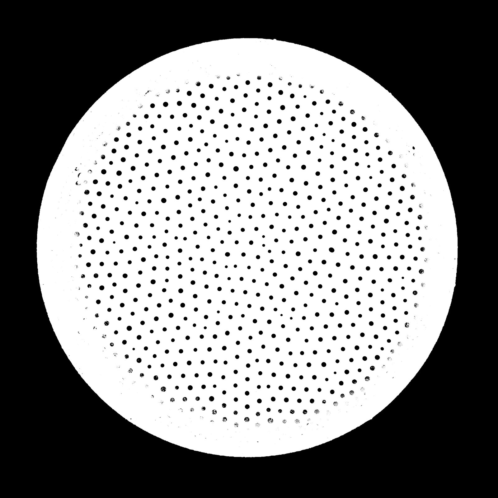

22 pressures,five criteria
Method · 2026
A hybrid approach. Qualitative: 50+ scientific papers aggregated. Quantitative: 15+ databases, plus your own data: six data points to provide. A continuously improved model. Every figure is sourced and auditable.


The calculation
- Magnitude = intensity × (one + extent × frequency × reversibility × probability), weighted by your routes and volumes (TEU or tonnes)
- Residual impact = magnitude × (one − the reduction your carriers' actions achieve)
- 13 pages of calculations, summarised in a clear, useful interface.
High confidence
- 90–100% on the completeness of the pressures identified
- 66–100% on their weighting to your context
Frameworks
- SBTN
- TNFD
- CSRD (ESRS E4)
- European Commission
Data
- Copernicus Marine
- GBIF
- IBAT
- Protected Planet
- UNEP-WCMC